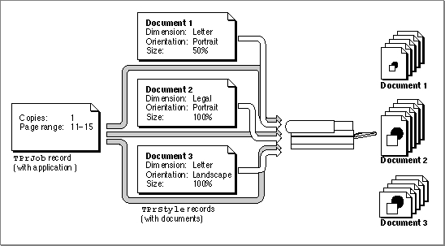
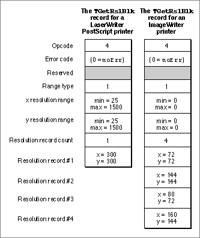
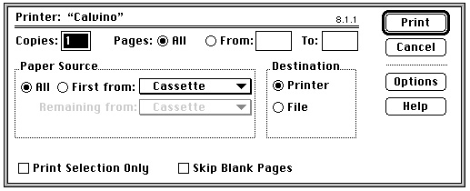

Legacy Document
Important: The information in this document is obsolete and should not be used for new development.
Important: The information in this document is obsolete and should not be used for new development.


Using the Printing Manager
The Printing Manager defines routines that give your application device-independent control over the printing process. You can use these routines to print documents, to display and alter the print dialog boxes, and to handle printing errors.To use the Printing Manager, you must first initialize QuickDraw, the Font Manager, the Window Manager, the Menu Manager, TextEdit, and the Dialog Manager. The first Printing Manager routine to call, when you are ready to print, is
PrOpen; the last routine to call isPrClose.All of the Printing Manager routines described in this chapter are available on both basic QuickDraw and Color QuickDraw systems using system software version 4.1 or later. However, not all printer drivers support all features provided by the
PrGeneralprocedure. (When you call thePrGeneralprocedure, described in "Getting and Setting Printer Information" beginning on page 9-26, it in turn calls the current printer driver to get or set the desired information.) After callingPrGeneraland passing it a particular opcode, you should call thePrErrorfunction and test whether it returns theopNotImplresult code, which indicates that the printer driver does not support that particular opcode.All printable documents must have a
TPrintrecord. EachTPrintrecord contains information about page size, number of copies requested, and the range of pages the user wants printed. Although only the information the user specifies through the style dialog box should be preserved each time the user prints the document, you can save the entireTPrintrecord when you save the document. The next time the user opens the document, you can retrieve the user's preferences as saved in theTPrintrecord and then use thePrValidatefunction to validate the fields of theTPrintrecord.To print a user's document, you must first create or validate a
TPrintrecord for the document. You can use thePrintDefaultprocedure to initialize the values in aTPrintrecord. You can use thePrValidatefunction to check that an existingTPrintrecord is compatible with the current printer and its driver. Your application should include a printing loop that handles printing and checks for printing errors at every step.You should never assume the type of printer that has been selected; your application should always be able to print to any type of printer. However, for some special features that are not supported by QuickDraw (notably rotated text and graphics, dashed lines, and hairlines), you may want to create two versions of your drawing code: one that uses picture comments to take advantage of the features, and another that provides QuickDraw-based implementations of these features. Using picture comments, your application can instruct printer drivers to perform operations that QuickDraw does not support. For more information, see Appendix B, "Using Picture Comments for Printing," in this book.
The rest of this section describes how you can
Be aware that the burden of maintaining backward compatibility with early Apple printer models--as well as maintaining compatibility with over a hundred existing printer drivers--requires extra care on your part. When the Printing Manager was initially designed, it was intended to support ImageWriter printers directly attached to Macintosh computers with only a single floppy disk and 128 KB of RAM. Later, the Printing Manager was implemented on PostScript LaserWriter printer drivers for more powerful Macintosh computers sharing LaserWriter printers on networks. Since then, the Printing Manager has been implemented on a substantial--and unanticipated--number of additional Apple and third-party printer drivers, each in its own, slightly unique way. When you use Printing Manager routines and data structures, you should be especially wary of and defensive about possible error conditions. Because Apple has little control over the manner in which third parties support the Printing Manager in their printer drivers, you should test your application's printing code on as many printers as possible.
- create and use a
TPrintrecord- structure your printing loop to print a document
- use the
PrGeneralprocedure to determine printer characteristics- alter the style and job dialog boxes
- write an idle procedure that runs during printing
- handle printing errors
Creating and Using a TPrint Record
To print a document, you need a validTPrintrecord that is formatted for the current versions of the Printing Manager and the printer driver.To create a new
TPrintrecord, you must first create a handle to it with a Memory Manager function such asNewHandleorNewHandleClear. You then must use thePrintDefaultprocedure to set the fields of the record to the default values for the current printer driver, as illustrated in the following code fragment.
VAR prRecHdl: THPrint; {allocate handle to a TPrint record} prRecHdl := THPrint(NewHandleClear(SizeOf(TPrint))); IF prRecHdl <> NIL THEN PrintDefault(prRecHdl) {sets appropriate default values } { for current printer driver} ELSE ; {handle error here}You can also use an existingTPrintrecord (for instance, one saved with a document). If you use an existingTPrintrecord, be sure to call thePrValidatefunction before using theTPrintrecord to make sure it's valid for the current version of the Printing Manager and for the current printer driver.Listing 9-1 shows an application-defined routine that reads a
TPrintrecord that the application has saved as a resource of type'SPRC'with the document. (The Resource Manager routinesCurResFile,UseResFile,Get1Resource, andDetachResourcethat are shown in this listing are described in the chapter "Resource Manager" in Inside Macintosh: More Macintosh Toolbox.)Listing 9-1 Reading a document's
TPrintrecord
FUNCTION MyGetPrintRecordForThisDoc (refNum: Integer; VAR prRecHdl: THPrint; VAR prRecChanged: Boolean): OSErr; VAR saveResFile: Integer; BEGIN saveResFile := CurResFile; {save the resource file for the document} UseResFile(refNum); prRecHdl := THPrint(Get1Resource('SPRC', kDocPrintRec)); IF prRecHdl <> NIL THEN BEGIN DetachResource(Handle(prRecHdl)); prRecChanged := PrValidate(prRecHdl); {validate TPrint record} MyGetPrintRecordForThisDoc := PrError; END ELSE MyGetPrintRecordForThisDoc := kNILHandlePrintErr; UseResFile(saveResFile); END;You should save theTPrintrecord when the user saves the document. By doing this, you can save any preferences that the user has selected for printing that document, such as orientation of the page or page size. See the chapter "Resource Manager" in Inside Macintosh: More Macintosh Toolbox for information about saving data such asTPrintrecords in resources.Every printer driver uses the fields of the
TPrintrecord differently. To maintain compatibility with the Printing Manager, you should follow these guidelines:
- Do not test for the contents of undocumented fields.
- Do not set fields in the
TPrintrecord directly.- Use the print dialog boxes provided by the printer drivers or, if you want to customize these dialog boxes, alter them only as recommended in "Altering the Style or Job Dialog Box" on page 9-32.
Printing a Document
When writing an application, the code you provide that handles printing is referred to as the printing loop. A printing loop calls all the Printing Manager routines necessary to print a document. In general, a printing loop must do the following tasks:
Listing 9-2 shows an extremely broad example of a printing loop--the code does not optimize for the type of printer being used or for the material being printed (text, graphics, or a mixture of both). However, this sample routine, called
- It must unload unused code segments to ensure that you have as much memory as possible in which to print.
- It must open the Printing Manager and the current printer driver by using the
PrOpenprocedure.- It must set up a valid
TPrintrecord for the document (using any values the user previously specified through the style dialog box) by using thePrintDefaultprocedure or thePrValidatefunction. (When the user is printing from the Finder, it is best not to display the style dialog box, but rather to use saved or default settings for the document.)- It must display the job dialog box as appropriate by using the
PrJobDialogfunction or, for a customized job dialog box, thePrDlgMainfunction. (When the user is printing from the Finder, display the job dialog box only once, and then use thePrJobMergeprocedure to apply the information from this dialog box to any other documents selected by the user.)- It must determine the number of pages required to print the requested range of pages by examining the fields of the
TPrintrecord. (Depending on the page rectangle of the current printer, the amount of data you can fit on a physical page of paper may differ from that displayed on the screen, although it is usually the same.)- It must determine the number of copies to print by examining the
TPrintrecord.- It may display a status dialog box indicating to the user the status of the current printing operation by using the Dialog Manager function
GetNewDialog(described in the chapter "Dialog Manager" in Inside Macintosh: Macintosh Toolbox Essentials).- If it displays a status dialog box, it must install an idle procedure in the
pIdleProcfield of theTPrJobrecord (which is contained in theTPrintrecord) to update information in the status dialog box and to check whether the user wants to cancel the operation. (The default idle procedure also performs this check, but if you update information in your status dialog box you must provide your own idle procedure.)- It must print the requested range of pages for each requested copy by
- using the
PrOpenDocfunction to open a printing graphics port if the current page number is the first page or a multiple of the value represented by the constantiPFMaxPgs- opening a page for printing by using the
PrOpenPageprocedure- printing the page by drawing into the printing graphics port with the QuickDraw routines described in the rest of this book
- closing the page by using the
PrClosePageprocedure- using the
PrCloseDocprocedure to close the printing graphics port and begin printing the requested range of pages- checking whether the printer driver is using deferred printing and, if so, using the
PrPicFileprocedure to send the spool file to the printer
- Finally, the printing loop must close the Printing Manager by using the
PrCloseprocedure.
MyPrintLoop, does cover the major aspects of a printing loop: how to balance calls to the open and close routines, how to determine page count, and how to provide support for documents exceeding the maximum page length specified by the constantiPFMaxPgs.Listing 9-2 A sample printing loop
PROCEDURE MyPrintLoop(docToPrint: MyDocRecHnd; displayJob: Boolean); VAR copies, numberOfCopies: Integer; firstPage, lastPage: Integer; pageNumber, numberOfPages: Integer; doPrint, changed: Boolean; oldPort: GrafPtr; theStatus: TPrStatus; printError: Integer; BEGIN GetPort(oldPort); MyUnLoadTheWorld; {swap out those segments of code not needed to print} PrOpen; {open Printing Manager and the current printer driver} IF (PrError = noErr) THEN BEGIN gPrintResFile := CurResFile; {save the current resource file} gPrintRec := docToPrint^^.docPrintRecHdl; {set to this doc's print rec} changed := PrValidate(gPrintRec); {verify TPrint record} IF (PrError = noErr) THEN BEGIN {determine the number of pages required to print the document} numberOfPages := MyDetermineNumOfPages(gPrintRec^^.prInfo.rPage); {display job dialog box if requested, else use previous settings} IF displayJob THEN doPrint := PrJobDialog(gPrintRec) ELSE doPrint := MyDoJobMerge(gPrintRec); IF doPrint THEN BEGIN numberOfCopies := gPrintRec^^.prJob.iCopies; firstPage := gPrintRec^^.prJob.iFstPage;{save first page number} lastPage := gPrintRec^^.prJob.iLstPage; {save last page number} gPrintRec^^.prJob.iFstPage := 1; {reset to 1} gPrintRec^^.prJob.iLstPage := iPrPgMax; {reset to maximum} IF (numberOfPages < lastPage) THEN lastPage := numberOfPages; {to prevent printing past last } { page} {display a "Print Status" dialog box (optional)-- } { first, deactivate front window} MyDoActivateFrontWindow(FALSE, oldPort); gPrintStatusDlg := GetNewDialog(kPrintStatus, NIL, Pointer(-1)); {set up dialog items (insert name of document being printed)} MySetUpDBoxItems(docToPrint); ShowWindow(gPrintStatusDlg); {display the dialog box} {set up idle procedure (for later use)} gPrintRec^^.prJob.pIdleProc := @MyDoPrintIdle; {print the requested number of copies} FOR copies := 1 TO numberOfCopies DO BEGIN UseResFile(gPrintResFile);{restore driver's resource file} {print the requested range of pages of the document} FOR pageNumber := firstPage TO lastPage DO BEGIN {check current page number against iPFMaxPgs} IF (pageNumber - firstPage) MOD iPFMaxPgs = 0 THEN BEGIN IF pageNumber <> firstPage THEN {if max size of spool file has been reached (and this } { isn't the first page), then close the document, } { initiate printing, then reopen the document} BEGIN PrCloseDoc(gPrinterPort); {next line tests for deferred printing} IF (gPrintRec^^.prJob.bJDocLoop = bSpoolLoop) AND (PrError = noErr) THEN PrPicFile(gPrintRec, NIL, NIL, NIL, theStatus); END; {if this is the first page or a multiple of iPFMaxPgs, } { then open the document for printing} gPrinterPort := PrOpenDoc(gPrintRec, NIL, NIL); END; {of check current page number} IF (PrError = noErr) THEN BEGIN {print a page} PrOpenPage(gPrinterPort, NIL); IF (PrError = noErr) THEN {draw (print) a page in the printable area for the } { current printer (indicated by the rPage field)} MyDrawStuff (gPrintRec^^.prInfo.rPage, docToPrint, GrafPtr(gPrinterPort), pageNumber); PrClosePage(gPrinterPort); END; {of print a page} END; {of print the requested range of pages} PrCloseDoc(gPrinterPort); IF (gPrintRec^^.prJob.bJDocLoop = bSpoolLoop) AND (PrError = noErr) THEN PrPicFile(gPrintRec, NIL, NIL, NIL, theStatus); END; END; END; END; printError := PrError; PrClose; IF (printError <> noErr) THEN DoError(ePrint, printError); DisposeDialog(gPrintStatusDlg); SetPort(oldPort); MyDoActivateFrontWindow(TRUE, oldPort); {activate window} END;TheMyPrintLoopprocedure starts by getting a pointer to the current graphics port. Then it calls an application-defined routine,MyUnloadTheWorld, that swaps out code segments not required during printing. Then it opens the Printing Manager and the current printer driver and its resource file by callingPrOpen.The
MyPrintLoopprocedure saves the current resource file (after callingPrOpen, the current resource file is the driver's resource file) so that, if its idle procedure changes the resource chain in any way, it can restore the current resource file before returning; thus the driver does not lose access to its resources. TheMyPrintLoopprocedure then uses thePrValidatefunction to change any values in theTPrintrecord associated with the document to match those specified by the current printer driver; these values can be changed later by the printer driver as a result of your application's use of thePrStlDialogandPrJobDialogfunctions. (Your application passes a handle to aTPrintrecord to thePrStlDialogandPrJobDialogfunctions, and these procedures modify theTPrintrecord according to the user's interaction with the style and job dialog boxes.) TheMyPrintLoopprocedure callsPrValidaterather thanPrintDefaultto preserve any values that the user might have previously set through the style dialog box.To print a document, you must divide the data into sections that fit within the page rectangle dimensions stored in the
rPagefield of theTPrJobrecord, which is contained in theTPrintrecord. (This information is stored in therPagefield when you call thePrintDefault,PrValidate, orPrStlDialogroutine.) The application-defined functionMyDetermineNumOfPagesis specific to the application, because the way the application divides up the data depends on the type of text and graphics in the document. TheMyDetermineNumOfPagesfunction determines the number of pages required to print the document by comparing the size of the document with the printable area for the current printer, which is specified by the value in therPagefield of theTPrJobrecord in theTPrintrecord.After determining the number of pages required to print the document,
MyPrintLoopdisplays the job dialog box if the calling routine requested it to do so. If the user prints multiple documents at once, the calling routine sets thedisplayJobparameter toTRUEfor the first document andFALSEfor subsequent documents. This allows the user to specify values in the job dialog box only once when printing multiple documents. It also provides an application with the ability to print documents in the background (for example, as the result of responding to the Apple event Print Documents) without requiring the application to display the job dialog box.The user's responses in the job dialog box provide such information as the number of copies and the page numbers of the first and last pages requested. The
MyPrintLoopprocedure stores these values in the local variablesfirstPageandlastPage. It then resets the value of the first page in theTPrJobrecord as 1 and resets the value of the last page to the value represented by the constantiPrPgMax.The
MyPrintLoopprocedure compares the values of the number of pages in the document with the last page the user requested and changes the last page number as necessary. For example, if the user asks to print page 50 of a two-page document,MyPrintLoopresets the value of the last page to 2.At this point,
MyPrintLoopis about to begin the process of sending the pages off to be printed. So it displays its own status dialog box to inform the user of the current status of the printing operation. If your status dialog box provides a button or reports on the progress of the printing operation, you need to handle events in the dialog box by providing an idle procedure. Your idle procedure should update the items in your status dialog box to show the current progress of the printing operation, and it should determine whether the user has canceled the printing operation. The printer driver calls the idle procedure periodically during the printing process. For more information on idle procedures, see "Writing an Idle Procedure" on page 9-35.After installing its idle procedure, the
MyPrintLoopprocedure then begins the printing operation by performing a number of steps for each requested copy. First,MyPrintLooprestores the current resource file to the printer driver's resource file.
MyPrintLoopthen begins the process of printing each page. The maximum number of pages that can be printed at a time is represented by the constantiPFMaxPgs. If the file is larger than the value represented byiPFMaxPgs, your application can print the number of pages represented byiPFMaxPgsand then begin the printing loop again with the next section of the document. In this way, you can print any number of pages.Next,
MyPrintLoopopens a page for printing and draws the page in the printing graphics port with the application-definedMyDrawStuffprocedure, the details of which are specific to the application. The parameters toMyDrawStuffare the size of the page rectangle, the document containing the data to print, the printing graphics port in which to draw, and the page number to be printed. This allows the application to use the same code to print a page of a document as it uses to draw the same page on screen.When
MyPrintLoopis finished printing (or has printed a multiple of the value represented by the constantiPFMaxPgs), it closes the printing graphics port for the document. By testing for thebSpoolLoopconstant in thebJDocLoopfield of theTPrJobrecord,MyPrintLoopdetermines whether a printer driver is using deferred printing; if so,MyPrintLoopcalls thePrPicFileprocedure, which sends the spool file to the printer.Some QuickDraw printer drivers (in particular, those for the ImageWriter and ImageWriter LQ printers) provide two methods of printing documents: deferred and draft-quality. Typically, the printer driver uses deferred printing when a user chooses Best in the job dialog box, and it uses draft-quality printing when the user chooses Draft.
Deferred printing was designed to allow ImageWriter printers to spool a page image to disk when printing under the low memory conditions of the original 128 KB Macintosh computer. With deferred printing, a printer driver records each page of the document's printed image in a structure similar to a QuickDraw picture, which the driver writes to a spool file. For compatibility with printer drivers that still support deferred printing, use the
PrPicFileprocedure to instruct these printer drivers to turn the QuickDraw pictures into bit images and send them to the printer. (Draft-quality printing, on the other hand, is a method by which a printer driver converts into drawing operations calls only to QuickDraw's text-drawing routines. The printer driver sends these routines directly to the printer instead of using deferred printing to capture the entire image for a page in a spool file.)
The
- Note
- Do not confuse background printing with deferred printing. While printer drivers supporting background printing also create spool files, you do not need to use the
PrPicFileprocedure to send these spool files to the printer. In fact, there is no reliable way for you to determine whether a printer driver is using a spool file for background printing.
MyPrintLoopprocedure concludes by closing the Printing Manager, reporting any Printing Manager errors, and resetting the current graphics port to the original port.In your printing loop, you should balance all calls to Printing Manager open routines to the equivalent Printing Manager close routines. This is extremely important, even if you stop printing because of an error. Failure to call the matching close routines can cause the Printing Manager to perform incorrectly.
Note that
MyPrintLoopcallsPrErrorafter each Printing Manager routine. If an error is found, the loop calls a close routine (PrClose,PrClosePage, orPrCloseDoc) for any Printing Manager open routines (PrOpen,PrClosePage, orPrOpenDoc) before informing the user of the error. You should use this approach in your own application to make sure the Printing Manager closes properly and all temporary memory is released.
- WARNING
- Some applications use a method of printing that prints out each page of a spooled document as a separate print job in order to avoid running out of disk space while spooling the document. You should not use this method, known as "spool a page, print a page." It is appropriate only for a printer directly connected to the user's computer (that is, not to a network) and therefore creates device dependence--and also it's extremely slow. If the printer is a remote or shared device (such as a LaserWriter printer connected by an AppleTalk network), another application could print a document between the pages of your user's document. At worst, if both applications printing to the shared printer use the "spool a page, print a page" method, the printed documents could end up interleaved. The pages for one of the documents could be out of order, even when printed by itself on a shared, network printer.
Printing From the Finder
Typically, users print documents that are open on the screen one at a time while the application that created the document is running. Alternatively, users can print one or more documents from the Finder. To print documents from the Finder, the user selects one or more document icons and chooses the Print command from the File menu. When the Print command is chosen, the Finder starts up the application and passes it an Apple event--the Print Documents event--indicating that the documents are to be printed rather than opened on the screen.As explained in Inside Macintosh: Interapplication Communication, your application should support the required Apple events, which include the Print Documents event. In response to a Print Documents event, your application should do the following:
Figure 9-10 How the
- Your application should not open windows for the documents.
- For style information, your application should use saved or default settings instead of displaying the style dialog box to ask this information from the user.
- Your application should use the
PrJobDialogfunction (described on page 9-59) or thePrDlgMainfunction (described on page 9-60) to display the job dialog box only once. When the user clicks the OK button in the job dialog box, you can then use thePrJobMergeprocedure (described on page 9-63) to apply the information specified by the user to all of the documents selected from the Finder.For example, if the user has selected three documents to print, you can display the job dialog box only once and then apply the same information supplied by the user to all three documents. Figure 9-10 shows a situation where, through the job dialog box, the user has specified the number of copies and the range of pages to print. In this example, the application applies this job information to the
TPrintrecord of the three documents by callingPrJobMerge. Note thatPrJobMergepreserves the fields of theTPrintrecord that are specific to each document (that is, the fields that are set by the user through the style dialog box).- Your application should remain open until the Finder sends your application a Quit event. If appropriate, the Finder sends your application this Apple event immediately after sending it the Print Documents event.
PrJobMergeprocedure works
See Inside Macintosh: Interapplication Communication for more information about how to handle the Print Documents and Quit events.Providing Names of Documents Being Printed
Some printer drivers (usually those for printers such as LaserWriter printers that are shared among many users) provide the names of the users who are printing and the documents that are being printed to others interested in using the printer. Providing the names of users and documents is a courtesy to other users sharing the printer on a network. The printer driver gets the name of the document being printed from the title of the frontmost window on the user's screen. ThePrOpenDocandPrValidatefunctions call the Window Manager procedureFrontWindowto get the document's name.Printer drivers can't get a document name if your application doesn't display windows while printing. For example, applications should not open windows for their documents when the user prints from the Finder. If there is no front window, or if the window's title is empty, the printer driver sets the document name to "Unspecified" or "Untitled."
You can ensure that the document name is available by displaying a printing status dialog box and setting the window's title to the document's name. If the dialog box is one that doesn't have a title bar (like that of type
dBoxProc), this title is not displayed but the current printer driver can still use the title as the document's name. If you don't want to put up a visible window, you can create a tiny window (for instance, typeplainDBox) and hide it behind the menu bar by giving it the global coordinates of (1,1,2,2). See the chapter "Window Manager" in Inside Macintosh: Macintosh Toolbox Essentials for information about thedBoxProcandplainDBoxwindow types.
- Note
- Do not set the document name in the
TPrintrecord directly. Not all printer drivers support this field, and Apple does not guarantee that internal fields of the Printing Manager's data structures will remain the same.Printing Hints
QuickDraw is the primary means you use to print, and in general you can use QuickDraw in the printing graphics port exactly as you would for a screen's graphics port. There are a few things to note when drawing to the printing graphics port:
- Don't depend on values in a printing graphics port remaining identical from page to page. With each new page, you usually get reinitialized font information and other characteristics for the printing graphics port.
- Don't make calls that don't do anything on the printer. For example, QuickDraw erase routines such as
EraseRectare quite time-consuming and normally aren't needed on the printer. An erase routine takes time because every bit (90,000 bits per square inch on a 300 dpi LaserWriter) has to be cleared. Paper does not need to be erased the way the screen does. Also avoid using theTextBoxprocedure, which makes calls to theEraseRectprocedure. You might want to use a different method of displaying text (for example,DrawStringorDrawText) or write your own version ofTextBox. See the chapter "QuickDraw Text" in Inside Macintosh: Text.- Don't use clipping to select text to be printed. There are a number of subtle differences between how text appears on the screen and how it appears on the printer; you can't count on knowing the exact dimensions of the rectangle occupied by the text.
- Don't use fixed-width fonts to align columns. Because spacing is adjusted on the printer, you should explicitly move the pen to where you want it.
- Don't use the outline font style to create white text on a black background.
- Avoid changing fonts frequently.
- Because of the way rectangle intersections are determined, you slow printing substantially if your clipping region falls outside of the rectangle given by the
rPagefield of theTPrInforecord of theTPrintrecord.
Getting and Setting Printer Information
You can determine the resolution of the printer, set the resolution you want, find out if the user has selected landscape printing, or force enhanced draft-quality printing by using thePrGeneralprocedure. You call thePrGeneralprocedure with one of five opcodes:getRslDataOp,setRslOp,getRotnOp,draftBitsOp, ornoDraftBitsOp. These opcodes have data structures associated with them.When you call the
PrGeneralprocedure, it in turn calls the current printer driver to get or set the desired information. Not all printer drivers support all features provided by thePrGeneralprocedure, however, so your application can't depend on its use.Listing 9-3 shows an application-defined routine,
DoIsPrGeneralThere, that checks whether the current printer driver supports thePrGeneralprocedure. First,DoIsPrGeneralTheresets theopcodefield of theTGetRotnBlkrecord to thegetRotnOpopcode--the opcode used to determine whether the user has chosen landscape orientation. ThenDoIsPrGeneralTherepasses the address of theTGetRotnBlkrecord to thePrGeneralprocedure. It then callsPrErrorto get any errors that result from callingPrGeneral. If the error isresNotFound, the printer driver does not supportPrGeneral.Listing 9-3 Checking whether the current printer driver supports the
PrGeneralprocedure
FUNCTION DoIsPrGeneralThere: Boolean; VAR getRotRec: TGetRotnBlk; myPrintErr: OSErr; BEGIN myPrintErr := 0; getRotRec.iOpCode := getRotnOp; {set the opcode} getRotRec.hPrint := gMyPrRecHdl; {TPrint record this operation applies to} PrGeneral(@getRotRec); myPrintErr := PrError; PrSetError(noErr); IF (myPrintErr = resNotFound) THEN {the current driver doesn't support } DoIsPrGeneralThere := FALSE; { PrGeneral} ELSE DoIsPrGeneralThere := TRUE; {current driver supports PrGeneral} END;After determining that the current printer driver supportsPrGeneral, you can usePrGeneralto
As an alternative to testing for
- determine and set the resolution of the current printer
- determine the current page orientation
- force enhanced draft-quality printing
PrGeneral, your application can callPrGeneraland then test whetherPrErrorerror returns theopNotImplresult code, which indicates that the printer driver either does not supportPrGeneralor does not support that particular opcode.These operations are discussed in the following sections.
Determining and Setting the Resolution of the Current Printer
Some printer drivers support only one of the two possible kinds of resolution: discrete or variable. You can use thePrGeneralprocedure to determine the kind of resolution supported by the current printer and then use the highest resolution desired by your application or the user.Each printer has its own imaging capabilities. When you call
PrGeneralwith the valuegetRslDataOpin theiOpCodefield of theTGetRslBlkrecord,PrGeneralreturns the resolutions that the printer supports. Figure 9-11 showsTGetRslBlkrecords (described on page 9-50) returned by the drivers for a 300-dpi LaserWriter PostScript printer and a QuickDraw ImageWriter printer. Because it supports variable resolutions, theTGetRslBlkrecord for the LaserWriter driver specifies minimum and maximum resolutions in the x and y directions. Because it uses discrete resolutions, theTGetRslBlkrecord for the ImageWriter driver specifies no minimum or maximum resolutions in the x and y directions, but instead specifies the four discrete resolutions it supports.Figure 9-11 Sample resolutions for a PostScript printer and a QuickDraw printer

ATPrintrecord contains the x and y resolutions that the printer uses in printing the data associated with theTPrintrecord. For eachTPrintrecord you use, you can either use the default values or you can specify the particular imaging resolution that you want to use. To do this, you can callPrGeneral, specifying the valuesetRslOpin theiOpCodefield and specifying the x and y resolutions in theiXRslandiYRslfields of theTSetRslBlkrecord (which is described on page 9-51). ThePrGeneralprocedure returns thenoErrresult code if it has updated theTPrintrecord with this new resolution, or it returns thenoSuchRslresult code if the current printer doesn't support this resolution.Listing 9-4 illustrates how to use the
PrGeneralprocedure to determine the possible resolutions for the current printer and then set aTPrintrecord to the desired resolution.Listing 9-4 Using the
getRslDataOpandsetRslOpopcodes with thePrGeneralprocedure
FUNCTION DoSetMaxResolution (thePrRecHdl: THPrint): Integer; VAR maxDPI: Integer; resIndex: Integer; getResRec: TGetRslBlk; setResRec: TSetRslBlk; BEGIN maxDPI := 0; getResRec.iOpCode := getRslDataOp;{get printer resolution info} PrGeneral(@getResRec); IF (getResRec.iError = noErr) AND (PrError = noErr) THEN BEGIN {the TGetRslBlk record contains an array of possible resolutions-- } { so loop through each resolution range record looking for } { the highest resolution available where x and y are equal} FOR resIndex := 1 TO (getResRec.iRslRecCnt) DO BEGIN IF (getResRec.rgRslRec[resIndex].iXRsl = getResRec.rgRslRec[resIndex].iYRsl) AND (getResRec.rgRslRec[resIndex].iXRsl > maxDPI) THEN maxDPI := getResRec.rgRslRec[resIndex].iYRsl; END; {set the resolution to the maximum supported resolution} IF maxDPI <> 0 THEN BEGIN WITH setResRec DO BEGIN iOpCode := setRslOp; hPrint := thePrRecHdl; iXRsl := maxDPI; iYRsl := maxDPI; END; PrGeneral(@setResRec); END; {end of maxDPI <> 0} IF (setResRec.iError = noErr) AND (PrError = noErr) AND (maxDPI <> 0) THEN DoSetMaxResolution := maxDPI; END ELSE DoSetMaxResolution := 0; END;You can reset the original resolutions by calling thePrGeneralprocedure with thesetRslOpopcode a second time. To do so, you should save the values contained in theiVResandiHResfields of theTPrInforecord before making the first call toPrGeneral. You can also reset the original resolutions by calling thePrintDefaultprocedure with theTPrintrecord, which sets all of the fields of theTPrintrecord to the default values of the current printer resource file. However, if you usePrintDefaultyou lose all of the user's selections from the last style dialog box. (You may want to reset the original resolution because that may be the printer's best resolution, though not its highest.)Based on the information you get with a call to
PrGeneralusing thegetRslDataOpopcode, you may decide to change the resolution with a call toPrGeneralusing thesetRslOpopcode. If so, the printer driver may need to change the appearance of the style and job dialog boxes by disabling some items. Therefore, you should determine and set the resolution before you use thePrStlDialogandPrJobDialogfunctions (or thePrDlgMainfunction) to present the print dialog boxes to the user.Note that the style dialog boxes for some printers, such as the StyleWriter, may offer the user a choice of printing in Best or Normal modes, which sets the printing at 360 or 180 dpi, respectively. Your application has no control over this setting. The printer driver converts your drawing accordingly.
Determining Page Orientation
At times it can be useful for your application to determine which page orientation the user selects in the style dialog box. For instance, if an image fits on a page only if it is printed in landscape orientation (theprInfofield of theTPrintrecord defines a smaller horizontal value for the paper rectangle than for the image rectangle) and the user has not selected landscape orientation, your application can remind the user to select this orientation before printing. Otherwise, the user gets a clipped image.If you call the
PrGeneralprocedure with thegetRotnOpopcode in theTGetRotnBlkrecord (described on page 9-53), the printer driver returns in thefLandscapefield of this record a Boolean variable that indicates whether or not theTPrintrecord specifies landscape orientation. The user selects the type of orientation through the style dialog box, and the printer driver updates the fields of theTPrintrecord accordingly.Listing 9-5 shows an application-defined function,
DoIsLandscapeModeSet, that returns a Boolean value indicating whether the user has selected landscape orientation for the current document.Listing 9-5 Using the
getRotnOpopcode with thePrGeneralprocedure to determine page orientation
FUNCTION DoIsLandscapeModeSet (thePrRecHdl: THPrint): Boolean; VAR getRotRec: TGetRotnBlk; BEGIN getRotRec.iOpCode := getRotnOp; {set opcode} getRotRec.hPrint := thePrRecHdl; {specify TPrint record} PrGeneral(@getRotRec); {get landscape orientation} IF (getRotRec.iError = noErr) AND (PrError = noErr) AND getRotRec.fLandscape THEN DoIsLandscapeModeSet := TRUE ELSE DoIsLandscapeModeSet := FALSE; END;Enhancing Draft-Quality Printing
When the user selects faster, draft-quality printing from a job dialog box from some printer drivers, the printer driver handles the printing operation appropriately.However, you can force users to use an enhanced form of draft-quality printing on ImageWriter printers (as well as on other printers that may support enhanced draft-quality printing) by calling the
PrGeneralprocedure, specifying thedraftBitsOpopcode in aTDftBitsBlkrecord (described on page 9-52), and specifying theTPrintrecord for the operation. If your application produces only text, bitmaps, or pixel maps, this can increase performance and save disk space, because the printer driver prints the document immediately, rather than spooling it to disk as with deferred printing. ThedraftBitsOpopcode has no effect if the printer driver does not support draft-quality printing or does not support deferred printing. If the driver does not support thedraftBitsOpopcode, thePrGeneralprocedure returns theopNotImplresult code.With draft-quality printing, a printer driver like the ImageWriter printer driver converts into drawing operations calls only to QuickDraw's text-drawing routines. The printer driver sends these text-drawing routines directly to the printer instead of using deferred printing to capture the entire image for a page in a spool file. Draft-quality printing produces quick, low-quality drafts of text documents that are printed straight down the page, from top to bottom and left to right.
Using the
PrGeneralprocedure, it's possible to produce enhanced draft-quality printing on some printers--such as ImageWriter printers. Normally, draft-quality printing renders output consisting only of text. However, enhanced draft-quality printing prints the bitmaps and pixel maps that your application draws using theCopyBitsprocedure (described in the chapter "QuickDraw Drawing" in this book) without using deferred printing to write to and read from a spool file.Because it's supported by so few printer drivers, and because it offers little in the way of extra capability, enhanced draft-quality printing has limited usefulness.
To use enhanced draft-quality printing, call
PrGeneralwith thedraftBitsOpopcode before using thePrStlDialogandPrJobDialogfunctions or thePrDlgMainfunction to present the style dialog box and job dialog box to the user. The use of thedraftBitsOpopcode may cause items in the print dialog boxes to become inactive. For the ImageWriter printer driver, for example, the use of thedraftBitsOpopcode makes the landscape icon in the style dialog box and the Best and Faster options in the job dialog box inactive.
Listing 9-6 illustrates how to implement enhanced draft-quality printing.
- IMPORTANT
- If you call
PrGeneralwith thedraftBitsOpopcode after using thePrJobDialogorPrDlgMainfunction, and if the user chooses draft printing from the job dialog box, the ImageWriter printer does not print any bitmaps or pixel maps contained in the document.Listing 9-6 Using the
draftBitsOpopcode with thePrGeneralprocedure for enhanced draft-quality printing
FUNCTION DoDraftBits (thePrRecHdl: THPrint): Boolean; VAR draftBitsBlk: TDftBitsBlk; BEGIN draftBitsBlk.iOpCode := draftBitsOp;{set the opcode} draftBitsBlk.hPrint := thePrRecHdl; {specify the TPrint record} PrGeneral(@draftBitsBlk); {use enhanced draft quality} IF (draftBitsBlk.iError = noErr) AND (PrError = noErr) THEN DoDraftBits := TRUE {this TPrint record specifies } { enhanced draft printing} ELSE DoDraftBits := FALSE; {this TPrint record does not } { specify enhanced draft printing} END;You should keep one additional point in mind when using thedraftBitsOpopcode: all of the data that is printed must be sorted along the y axis, because reverse paper motion is not possible on the ImageWriter printer when printing in draft-quality mode. This means that you cannot print two objects side by side; that is, the top boundary of an object cannot be higher than the bottom boundary of the previous object. To get around this restriction, you should sort your objects before print time.You can call
PrGeneralwith thenoDraftBitsOpopcode to use regular draft-quality printing again. If you callPrGeneralwithnoDraftBitsOpwithout first callingdraftBitsOp, the procedure does nothing. As with thedraftBitsOpopcode, you should callPrGeneralwith thenoDraftBitsOpopcode before you present the style and job dialog boxes to the user.Altering the Style or Job Dialog Box
Each printer resource file includes definitions of the standard style and job dialog boxes that are specific to the type of printer managed by its printer driver. ThePrStlDialogandPrJobDialogfunctions display the style and job dialog boxes defined by the resource file of the current printer.For example, the standard style and job dialog boxes for the LaserWriter printer driver are shown in Figure 9-3 on page 9-6 and Figure 9-5 on page 9-7, respectively. The standard dialog boxes provided by the StyleWriter printer driver are shown in Figure 9-2 on page 9-6 and Figure 9-4 on page 9-6. Each dialog box has options that the user can set. If you want to use the standard style or job dialog box provided by the printer driver for the current printer, call the
PrStlDialogfunction or thePrJobDialogfunction.You may wish to add some additional options to these dialog boxes so that the user can customize the printing process even further. For example, Figure 9-12 illustrates a print job dialog box with two additional checkboxes: Print Selection Only and Skip Blank Pages.
Figure 9-12 A print job dialog box with additional checkboxes

You must follow these guidelines if you alter the style or job dialog boxes:
You can customize a style or job dialog box by undertaking the following steps:
- Add additional options below the standard ones in the dialog box and don't change the standard ones--that is, don't delete, rearrange, or add new items in the existing list.
- Don't count on an item retaining its current position on the screen or in the dialog item list.
- Don't use more than half the smallest screen height for your items. (The smallest screen height is the 9-inch Macintosh Classic screen.) Printer drivers are allowed to expand the items in the standard dialog boxes to fill the top half of a 9-inch screen.
- If you want to add a lot of items to the dialog boxes, be aware this may confuse users. You should consider having your own separate dialog box in addition to the existing style and job dialog boxes.
The event filter function pointed to in the
- Use the
PrOpenprocedure to open the Printing Manager.- Use the
PrStlInitorPrJobInitfunction to initialize aTPrDlgrecord. This record, described on page 9-47, contains the information needed to set up the style or job dialog box.- Define an initialization routine that appends items to the printer driver's style or job dialog box. Your initialization routine should
- use the Dialog Manager procedure
AppendDITLto add items to the dialog box whoseTPrDlgrecord you initialized withPrStlInitorPrJobInit- install two functions in the
TPrDlgrecord: one--in thepFltrProcfield--for handling events (such as update events for background applications) that the Dialog Manager doesn't handle in a modal dialog box, and another--in thepItemProcfield--for handling events in the items added to the dialog box (for example, when the user clicks a checkbox that your application adds)- return a pointer to the
TPrDlgrecord
- Pass the address of your initialization routine to the
PrDlgMainfunction to display the dialog box.- Respond to the dialog box as appropriate.
- Use the
PrCloseprocedure when you are finished using the Printing Manager.
pFltrProcfield of theTPrDlgrecord extends the Dialog Manager's ability to handle events. When your application displays the style or job dialog box, you can use an event filter function to handle events that the Dialog Manager doesn't handle for modal dialog boxes. The chapter "Dialog Manager" in Inside Macintosh: Macintosh Toolbox Essentials describes how to write an event filter function for the Dialog Manager.The routine you supply in the
pItemProcfield of theTPrDlgrecord should handle events in the items you add to the dialog box. Sometimes called a dialog hook, this routine typically responds to clicks in the radio buttons or checkboxes that you add to the dialog box.Listing 9-7 shows an application-defined routine called
DoPrintDialogthat specifies its own initialization function, calledMyPrDialogAppend.Listing 9-7 Installing an initialization function to alter the print job dialog box
FUNCTION DoPrintDialog: OSErr; {display print job dialog box} BEGIN PrOpen; {open the Printing Manager} gPrintRec := THPrint(NewHandle(sizeof(TPrint)));{create a TPrint record} PrintDefault(gPrintRec); {use default values for the TPrint record} gPrJobDialogBox := PrJobInit(gPrintRec); {get a pointer to the } { invisible job dialog box} {use PrDlgMain to display the altered job dialog box} IF (PrDlgMain(gPrintRec, @MyPrDialogAppend)) THEN MyPrintDoc; PrClose; {close the Printing Manager} END;The application-defined routineMyPrDialogAppendis shown in Listing 9-8. It uses the Resource Manager functionGetResourceto get a handle to an item list ('DITL') resource containing the two extra checkboxes shown in Figure 9-12 on page 9-33. Using the Dialog Manager procedureAppendDITL,MyPrDialogAppendappends the items in this item list resource to the print job dialog box. ThenMyPrDialogAppend
installs the application's event filter function for modal dialog boxes. Finally,MyPrDialogAppendinstalls it own routine, calledHandleMyAppendedItems, to handle clicks in the two newly installed checkboxes.Listing 9-8 Adding items to a print job dialog box
FUNCTION MyPrDialogAppend (hPrint: THPrint): TPPrDlg; VAR MyAppendDITLH: Handle; BEGIN IF gDITLAppended = FALSE THEN BEGIN {first, get item list resource containing checkboxes} MyAppendDITLH := GetResource('DITL', kPrintingCheckBoxes); {next, append this item list resource to job dialog box} AppendDITL(DialogPtr(gPrJobDialogBox), MyAppendDITLH, appendDITLBottom); gDITLAppended := TRUE; END; gFltrItemProc := LongInt(gPrJobDialogBox^.pFltrProc); {put an event filter function (to handle events that Dialog } { Manager doesn't handle in modal dialog boxes) } { in the pFltrProc field of the TPrDlg record} gPrJobDialogBox^.pFltrProc := ProcPtr(@MyEventFilter); gPrItemProc := LongInt(gPrJobDialogBox^.pItemProc); {put a dialog hook to handle clicks in appended items } { in the pItemProc field of the TPrDlg record} gPrJobDialogBox^.pItemProc := ProcPtr(@HandleMyAppendedItems); MyPrDialogAppend := gPrJobDialogBox; END;See the chapter "Dialog Manager" in Inside Macintosh: Macintosh Toolbox Essentials for information about item list resources, event filter functions for modal dialog boxes, and theAppendDITLprocedure. See the chapter "Resource Manager" in Inside Macintosh: More Macintosh Toolbox for information about theGetResourcefunction.Writing an Idle Procedure
The printer driver for the current printer periodically calls an idle procedure while it sends a document to the printer. TheTPrJobrecord contained in theTPrintrecord contains a pointer to an idle procedure in thepIdleProcfield. If this field contains the valueNIL, then the printer driver uses the Printing Manager's default idle procedure. The default idle procedure checks for Command-period keyboard events and sets theiPrAborterror code if one occurs, so that your application can cancel the print job at the user's request. However, the default idle procedure does not display a print status dialog box. It is up to the printer driver or your application to display a print status dialog box.Most printer drivers display their own status dialog boxes. However, your application can display its own status dialog box that reports the current status of the printing operation to the user. If it does, your status dialog box should allow the user to press Command-period to cancel the printing operation, and it may also provide a button allowing the user to cancel the printing operation. To handle update events in your status dialog box, Command-period keyboard events, and clicks in your Cancel button (if you provide one), you should provide your own idle procedure. (See Figure 9-9 on page 9-12 for an example of an application-defined status dialog box.)
Here are several guidelines you must follow when writing your own idle procedure.
Listing 9-9 shows an application-defined idle procedure.
- If you designate an idle procedure, you must set the
pIdleProcfield of theTPrJobrecord after presenting the style and job dialog boxes, validating theTPrintrecord, and initializing the fields in theTPrintrecord (because the routines that perform these operations may reset thepIdleProcfield toNIL). TheTPrJobrecord is described on page 9-44.- You must install your idle procedure in the
TPrintrecord before calling thePrOpenDocfunction. Otherwise, some printer drivers do not give the idle procedure any time to run.- Do not attempt any printing from within the idle procedure, because the Printing Manager is not reentrant.
- Do not reference global variables unless you set up your own A5 world (as described in Inside Macintosh: Processes).
- If you use a modal dialog box to display printing status information, you must call the Event Manager function
WaitNextEvent(described in the chapter "Event Manager" in Inside Macintosh: Macintosh Toolbox Essentials) to capture mouse events or the Command-period keyboard event that signals that the user wants to cancel printing. Do not call theWaitNextEventfunction unless you display a modal dialog box.- So that your application doesn't draw into a printing port, don't call the QuickDraw
OpenPicturefunction or theDrawPictureprocedure from your idle procedure without changing the current graphics port.- Upon entry to the idle procedure, you must save the printing graphics port, and you must restore it upon exit if you draw anything within the idle procedure. If you don't save and restore the printing graphics port, upon return the printer driver draws into the graphics port of your dialog box instead of its own printing graphics port. To save the printer's printing graphics port, call the
GetPortprocedure when entering the idle procedure. Before you exit, call theSetPortprocedure to set the port back to the printer driver's printing graphics port. (TheGetPortandSetPortprocedures are described in the chapter "Basic QuickDraw" in this book.)- If your idle procedure changes the resource chain, you should save the reference number of the printer driver's resource file by calling the
CurResFilefunction at the beginning of your idle procedure. (Any routine that changes the value of the global variableTopMapHdl, such as theOpenResFilefunction or theUseResFileprocedure, changes the resource chain. Some printer drivers assume the resource chain does not change, and you may get an error if you change it.) When you exit from the idle procedure, restore the resource chain using theUseResFileprocedure. If you are not changing the resource chain, you do not need to save the resource chain. (TheCurResFile,OpenResFile, andUseResFileroutines are described in the chapter "Resource Manager" in Inside Macintosh: More Macintosh Toolbox.)- Avoid calling the
PrErrorfunction within the idle procedure. Errors that occur while it is executing are usually temporary and serve only as internal flags for communication within the printer driver, not for the application. If you absolutely must callPrErrorwithin your idle procedure and an error occurs, do not cancel printing. Wait until the last called printing procedure returns and then check to see if the error still remains.
PROCEDURE MyDoPrintIdle; VAR oldPort: GrafPtr; cursorRgn: RgnHandle; event: EventRecord; gotEvent: Boolean; itemHIt: Integer; handled, canceled: Boolean; BEGIN GetPort(oldPort); SetPort(gPrintStatusDlg); cursorRgn := NIL; gotEvent := WaitNextEvent(everyEvent, event, 15, cursorRgn); IF gotEvent THEN BEGIN handled := MyStatusHandleEvent(gPrintStatusDlg, event, itemHit); canceled := MyUserDidCancel; IF canceled THEN itemHit := kStopButton; handled := MyDoHandleHitsInStatusDBox(itemHit); END; MyUpdateStatusInformation(canceled); {update status } { information in dialog box} SetPort(oldPort); END;The application displays a modal dialog box for its status dialog box, and then installsMyDoPrintIdle, which calls the Event Manager functionWaitNextEventto capture events while the modal dialog box is displayed.The
MyDoPrintIdleprocedure first saves the current graphics port (so that it can later restore it) and then sets the current port to the graphics port of the status dialog box. Your idle procedure should save, set, and restore the graphics port in this manner to avoid accidentally drawing in the printing graphics port.The
MyDoPrintIdleprocedure then callsWaitNextEventto get the current event and then calls its own routine to handle the event. (For example, theMyStatusHandleEventfunction handles update and activate events.) By callingWaitNextEvent,MyDoPrintIdlegives background applications a chance to handle update events in their windows while the application in this example displays a modal dialog box. (The Dialog Manager does not give background applications a chance to handle update events in their windows when a modal dialog box is displayed.)
MyDoPrintIdlethen calls another application-defined procedure to determine whether the user wishes to cancel the printing operation. TheMyUserDidCancelfunction scans the event queue for keyboard events and mouse events. If it finds a Command-period keyboard event, it returnsTRUE. TheMyUserDidCancelfunction also returnsTRUEif it finds mouse events indicating that the user clicked the Stop Printing button (that is, it uses the Dialog Manager functionFindDialogItemto determine whether the mouse location specified in a mouse event is in the Stop Printing button). If the user clicks the Stop Printing button,MyUserDidCancelhighlights the button appropriately.To handle hits in the status dialog box, the
MyDoHandleHitsInStatusDBoxfunction simply checks the item number passed to it. For the Stop Printing button,MyDoHandleHitsInStatusDBoxcallsPrSetError, specifying the error codeiPrAbort. For all other items,MyDoHandleHitsInStatusDBoxsets the cursor to a spinning wristwatch cursor.Finally, the
MyDoPrintIdleprocedure updates the items in the status dialog box that report status to the user.Handling Printing Errors
You should always check for error conditions while printing by calling thePrErrorfunction. Errors returned may include AppleTalk and Operating System errors in addition to Printing Manager errors.
If you determine that an error has occurred after the completion of a printing routine, stop printing. Call the close routine that matches any open routine you have called. For example, if you call
- Note
- Don't call
PrErrorfrom within your idle procedure. See "Writing an Idle Procedure" on page 9-35 for more information.PrOpenDocand receive an error, skip to the next call toPrCloseDoc; if you callPrOpenPageand get an error, skip to the next calls toPrClosePageandPrCloseDoc. Remember that, if you have called some open routine, you must call the corresponding close routine to ensure that the printer driver closes properly and that all temporary memory allocations are released and returned to the heap.If you are using the
PrErrorfunction and thePrGeneralprocedure (described in "Getting and Setting Printer Information" beginning on page 9-26), be prepared to receive the following errors:noSuchRsl,opNotImpl, andresNotFound. In all three cases, your application should be prepared to continue to print without using the features of that particular opcode.The
noSuchRslerror means that the currently selected printer does not support the requested resolution. TheopNotImplerror means that the currently selected printer does not support the particularPrGeneralopcode that you selected. TheresNotFounderror means the current printer driver does not support thePrGeneralprocedure at all. This lack of support should not be a problem for your application, but you need to be prepared to deal with this error. If you receive aresNotFoundresult code fromPrError, clear the error with a call toPrSetErrorwith a value ofnoErras the parameter; otherwise,PrErrormight still contain this error the next time you check it, which would prevent your application from printing.Do not display any alert or dialog boxes to report an error until the end of the printing loop. Once at the end, check for the error again; if there is no error, assume that the printing completed normally. If the error is still present, then you can alert the user. This technique is important for two reasons.
- First, if you display a dialog box in the middle of the printing loop, it could cause errors that might terminate an otherwise normal printing operation. For example, if the printer is connected to an AppleTalk network, the connection might be terminated abnormally because the printer driver would be unable to respond to AppleTalk requests received from the printer while the dialog box was waiting for input from the user. If the printer does not hear from the Macintosh Operating System within a short period of time (anywhere from 30 seconds to 2 minutes, depending on the driver), it assumes that the Macintosh computer is no longer connected to the printer and times out. The timeout results in a prematurely broken connection, causing another error, to which the application must respond.
- Second, the printer driver may have already displayed its own dialog box in response to an error. In this instance, the printer driver posts an error to let the application know that something went wrong and it should cancel printing. For example, when a LaserWriter printer driver detects that the user has canceled printing, the driver posts an error to let the application know that it needs to cancel printing. Because the driver has already taken care of the error by displaying a dialog box, the error is reset to 0 before the printing loop is complete. The application should check for the error again at the end of the printing loop, and, if appropriate, the application can then display a dialog box.
Subtopics
- Creating and Using a TPrint Record
- Printing a Document
- Printing From the Finder
- Providing Names of Documents Being Printed
- Printing Hints
- Getting and Setting Printer Information
- Determining and Setting the Resolution of the Current Printer
- Determining Page Orientation
- Enhancing Draft-Quality Printing
- Altering the Style or Job Dialog Box
- Writing an Idle Procedure
- Handling Printing Errors